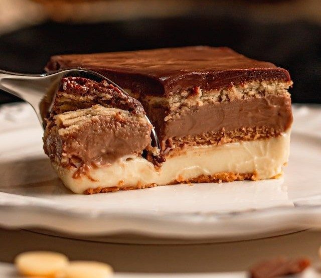
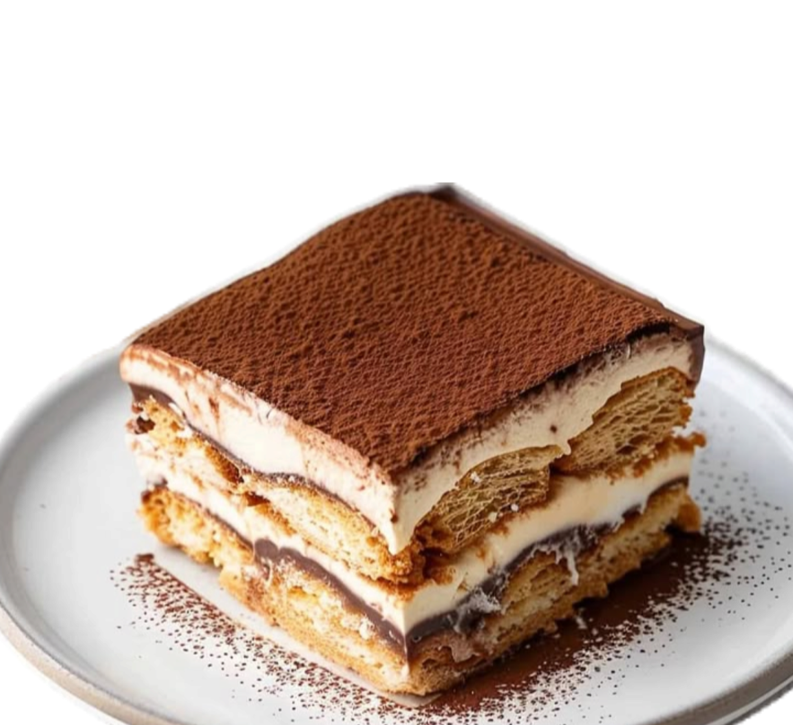

Pavê
Ingredientes
- Um pacote de bolacha maisena;
- Duas caixas de creme de leite;
- Leite;
- Uma caixa de leite condensado;
- Duas colheres de maisena;
- Chocolate em pó
- Açúcar;
- Margarina.



Em uma panela coloque o leite condensado, uma caixa de creme de leite, leite a gosto (tome cuidado), duas colheres de maisena e o açúcar. Coloque no fogo e não pare de misturar até começar a desgrudar da panel;
Em outra panela adicone o outro creme de leite, açucar, margarina e chocolate em pó e repita o procedimento;
Depois, em uma forma, coloque as bolachas mergulhadas no leite e vá fazendo camadas de chocolate branco e preto que acabou de cozinhar
Por fim adicione algum enfeite, limpe a borda e deixe resfriar na geladeira por 2h, e está pronto!


Bata o ovo, o óleo e o açucar (Não esqueça de seguir as dicas que estão na Dicas
Em seguida adicione a farinha e o leite, e continue batendo;
Adicione a baunilha e mexa;
Mexa o fermento e as claras em neve (caso tenha feito) bem lentamente;
Por fim, coloque no forno a 200°C por 40 min e seu bolo estará pronto!